Практичні курси · журнал «ДентАрт» 2014 №4 (77)
Біоестетична реконструкція. Етапність і методи
BIOESTHETIC RECONSTRUCTION. STAGES AND METHODS
У повсякденній стоматологічній практиці вибір правильного рішення залежить від усіх запланованих методів обстеження і аналізу.
Рішення про специфічне лікування є результатом взаємодії кількох складових: наукового обґрунтування, досвіду лікаря та концепції стоматологічної допомоги, побажань, скарг пацієнта і прямих протипоказань.
Комплексні випадки вимагають глибших знань і аналізу, тому ця стаття може продемонструвати послідовність лікування лише схематично. Обговорити всі деталі в цій публікації неможливо.
Ухвалення рішення вимагає точних процедур і перевірених інструментів:
СОАП — суб'єктивний та об'єктивний аналіз і планування — є інструментом, з якого слід почати:
Суб'єктивний: скарги пацієнта, його очікування та протипоказання.
Об'єктивний: клінічні та інструментальні дослідження.
Аналіз, діагноз.
План.
Процедура СОАП враховує всі аспекти біоестетичного аналізу:
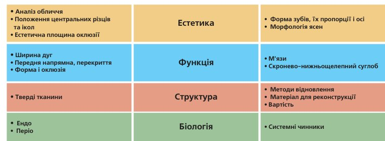
Аналіз ґрунтується на фото- і відеодокументації, рентгенологічному і клінічних дослідженнях.
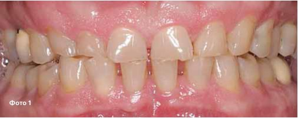
Положення верхньої щелепи фіксується в естетичній площині оклюзії, сагітальна вісь естетичної площини зафіксована горизонтально при положенні пацієнта сидячи або стоячи рівно, з поглядом, спрямованим горизонтально.
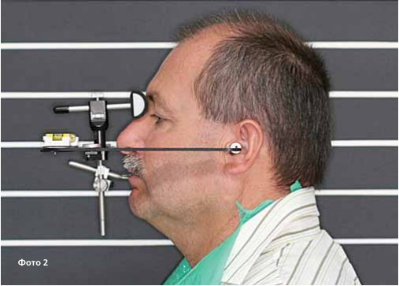
Модель нижньої щелепи гіпсується у центральному співвідношенні, що дозволяє провести аналіз правильно (фото 3). Оскільки реєстрація центрального співвідношення має багато цілей і є відправною точкою для більшості дорогих реконструкцій, вона має проводитися з граничною обережністю і перевіреними методами. Такі ж вимоги ставляться до всіх технічних етапів, таких як зняття відбитків, відливання моделей, їх установка в артикулятор і т.д. Ця реєстрація центрального співвідношення має значення лише для попереднього діагнозу, положення нижньої щелепи, можливо, буде змінюватися в процесі лікування. Аналіз моделей (ДентАрт №3, 2014) повинен відповідати певним правилам, які наведені в статті про біоестетичну оцінку.
Завершення процедури СОАП дає нам можливість скласти попередній план лікування.
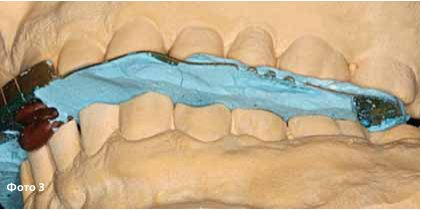
Визначення центрального співвідношення
У випадку з перевизначенням центрального співвідношення та пошуком нового положення нижньої щелепи лікування починається із роз'єднання за допомогою передньої накусувальної пластинки на різцях верхньої щелепи (MAGO). Ця пластинка депрограмує існуючі рухи нижньої щелепи, стабілізує суглобові головки, репрограмує традиційні для пацієнта звички жування, керуючись пропріоцептивною чутливістю, репозиціонує нижню щелепу у терапевтичне положення. Також з її допомогою можна первинно візуалізувати естетику передніх зубів.
Як тільки зникає необхідність вносити зміни в накусувальну пластинку (пацієнт не відчуває болю, нижня щелепа вільно рухається і всі функції в нормі протягом певного часу), потрібно довести, що нижня щелепа і суглоби перебувають у стабільній позиції. Для цього провадиться процедура стабільного позиціонування суглобових головок. Реєструється близько п'яти положень центрального співвідношення, і нижня щелепа встановлюється в кожному з них. Якщо всі положення збігаються, то ми отримуємо істотний доказ нормального функціонування і стабільної позиції нижньої щелепи (фото 5).
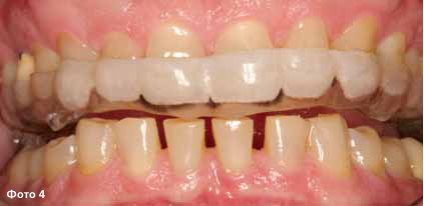
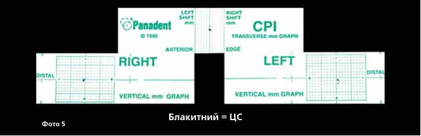
Після цього робиться остаточне гіпсування набору моделей: верхня встановлюється в естетичній площині оклюзії, нижня — у стабільному положенні суглобових головок.
На цих моделях, керуючись даними, отриманими при біоестетичному аналізі, провадиться воскове моделювання передніх зубів в їх ідеальному положенні. Для клінічної перевірки воскового моделювання виконується мокап безпосередньо в порожнині рота з фотореєстрацією і знову робиться біоестетичний аналіз.
Визначення остаточного вертикального розміру оклюзії ґрунтується на біоестетичному аналізі і може потребувати кількох попередніх мокапів і шин в різних вертикальних позиціях, клінічних тестів, фотознімків і повторного аналізу. Цифровий дизайн усмішки не дає можливості одночасної симуляції сенсомоторних змін (фото 6, 7).
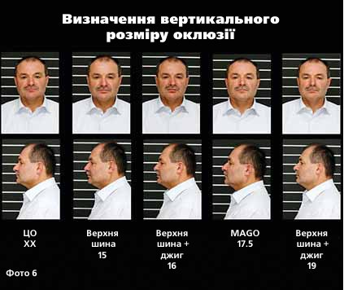
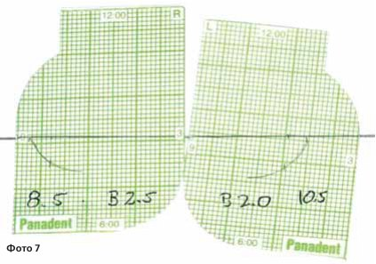
Остаточне і повне воскове моделювання вимагає моделей, зафіксованих у функціональній площині оклюзії, слідуючи положенню шарнірної осі — але тільки після доказу стабільності суглобових головок. Вісь визначається динамічно, кривизна і кути рухів суглобів програмуються в артикуляторі.
Саме це має на увазі повне воскове моделювання ідеальної морфології зубів, перекриття та оклюзії в ідеальному положенні нижньої щелепи (фото 8).
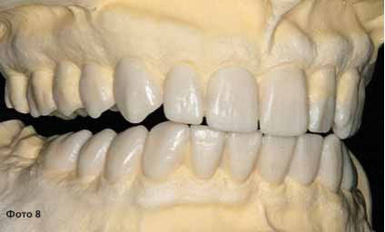
Лише після всіх цих заходів можна остаточно визначити метод відновлення і вибрати матеріал для реконструкції. З цього моменту перенесення воскового моделювання в остаточну реконструкцію виконується досить легко.
Щоб створити простір для реконструкції в достатньому і потрібному обсязі та запобігти надмірному препаруванню і безглуздій втраті здорових тканин зубів, використовуються шаблони для препарування, виготовлені на основі воскового моделювання (фото 9). Існують різні техніки, і в кожному випадку потрібен специфічний підхід. Завжди корисно використовувати шаблони і робити препарування безпосередньо на моделях. Це допомагає зберегти натуральні тканини зубів, уточнити межі з урахуванням вимог матеріалів для відновлення і форму ретенції. Необхідно записати всі зроблені зміни натуральних зубів, зробити фото і скласти протокол, який можна буде використовувати на етапі клінічного препарування (фото 10). Можна препарувати мокап на моделі за методикою Галіпа Гюреля.
Також за допомогою воскового моделювання виготовляються шаблони для тимчасових конструкцій, і таким чином морфологія переноситься з тимчасових конструкцій з точністю 1:1. Шаблони для тимчасових конструкцій повинні мати чітку опору на не препарованих зубах, що залишилися, або вже виготовлених тимчасових реставраціях.
На фото 11 набір ключів, виготовлених на моделі, для перевірки точності виготовлення і фіксації тимчасових конструкцій. Тепер все готове для препарування.
Залежно від стану та побажань пацієнта, препарування можна розподілити на кілька етапів або проводити підготовку однієї щелепи на день (фото 12, 13). У разі поділу препарування тимчасові конструкції виготовляються як попередні, використовуючи MAGO. Зверніть увагу на те, що перш ніж продовжити препарування і прибрати всі опори або не препаровані зуби, слід виготовити тимчасові конструкції клінічним шляхом з використанням шаблону з воскового моделювання, одну за одною.
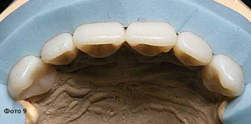
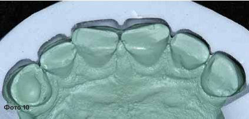
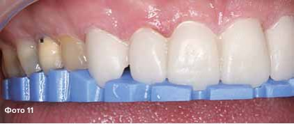
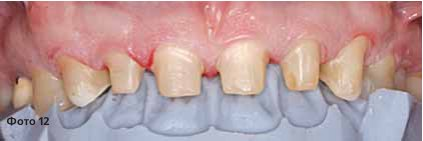
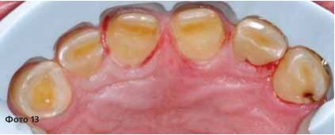
Необхідно точно перевіряти оклюзійні співвідношення на тимчасових конструкціях, починаючи з тонкої корекції передніх зубів, а потім бічних, лише після досягнення правильних оклюзійних співвідношень, як на восковому моделюванні (фото 14). Подбайте про використання просторово-стабільного міцного акрилового матеріалу. Варто мати досвідченого техніка чи асистента.
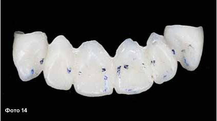
На цьому етапі депрограмуються шкідливі жувальні звички, репрограмується різцеве ведення, досягається стабільне положення суглобових головок (що означає стабільність центрального співвідношення нижньої щелепи), і в цьому центральному співвідношенні створюється генетична морфологія зубів, переднє ведення і центральна оклюзія на тимчасових конструкціях, виготовлених клінічним шляхом.
Після двох і більше днів препарування може виникнути спазм м'язів і набряк у суглобах. Необхідно перевіряти оклюзію після кожного дня. Найліпший варіант — використання реєстрації співвідношення при відкритому прикусі, використання лицьової дуги і установка моделей з тимчасовими конструкціями. Також слід робити біоестетичний аналіз отриманого результату.
Далі йдуть відтиски відпрепарованих зубів.
Верхню модель з відпрепарованими зубами буде встановлено за допомогою лицьової дуги.
Нижня модель після препарування встановлюється за допомогою реєстраторів центрального співвідношення. Ця реєстрація (фото 15) виконана за допомогою шаблону для нижніх різців, у тій самій висоті, що й воскове моделювання та тимчасові конструкції; у застосуванні якої-небудь сили на бічних зубах не було необхідності.
Тепер черга техніка перенести дані воскового моделювання в остаточну реставрацію, незалежно від матеріалу і техніки, обраної лікарем, буде це аналогова, цифрова чи комбінована техніка.
Далі можна робити примірку кераміки без глазурі, починаючи з передніх зубів і провадячи корекцію кожної одиниці, якщо це необхідно. В ідеальному випадку корекції не потрібні. В іншому випадку можуть знадобитися повторні відтиски і установка моделей.
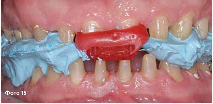
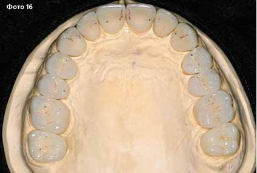
Після успішної примірки йде остаточна фіксація керамічних реставрацій. Необхідно послідовно перевіряти оклюзійні співвідношення і робити послідовну фіксацію, при цьому на верхніх іклах слід залишити тимчасові коронки або зафіксувати керамічну реставрацію на тимчасовий цемент.
Після закінчення лікування провадиться СОАП і наступне тривале спостереження.
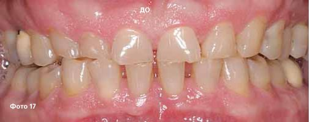
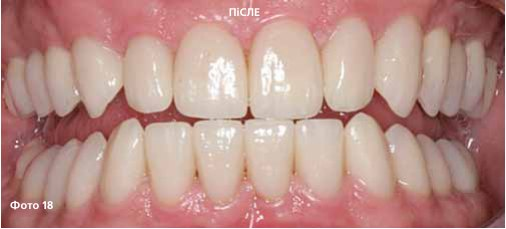
Переклад Романа Савости
Література
- J Am Dent Assoc. 2008;139:1318-1327. Esthetics and smile characteristics from the layperson's perspective: a computer-based survey study. Kerr AJ, Chan R, Fields HW, et al. Dentistry today; 31 March 2011; Exploring the World of Bioesthetic Dentistry; James R. Benson, DDS.
- J Esthet Restor Dent. 2011 Aug;23(4):219-36. doi: 10.1111/j.1708-8240.2011.00428.x. Epub 2011 May 12. Three-dimensional esthetic analysis in treatment planning for implant-supported fixed prosthesis in the edentulous maxilla: review of the esthetics literature. Bidra AS.
- Schweiz Monatsschr Zahnmed Vol. 118 2/2008; Bruxismus – gesicherte und potenzielle Risikofaktoren, eine systematische Literaturubersicht
- J Esthet Restor Dent. 2009;21(2):113-20. doi: 10.1111/j.1708-8240.2009.00242.x. Gingival zenith positions and levels of the maxillary anterior dentition. Chu SJ1, Tan JH, Stappert CF, Tarnow DP.
- Int J Periodontics Restorative Dent. 2009 Aug;29(4):385-93. Papilla proportions in the maxillary anterior dentition. Chu SJ1, Tarnow DP, Tan JH, Stappert CF.
- www.digitalsmiledesign.com; Digital smile design; ch. coachman
- Quintessenz Books; Interdisciplinary treatment planning, volume I and II; Editor: Michael Cohen, DDS, MSD, Seattle, Washington.
- Eur J Esthet Dent. 2008 Autumn;3(3):224-34. The importance of width/length ratios of maxillary anterior permanent teeth in esthetic rehabilitation. Duarte S Jr1, Schnider P, Lorezon AP.
- Quintessenz Bibliothek; 2005; Asthetische Analyse; M. Fradeani.
- Quintessenz Bibliothek; 2003; The Science and Art of Porcelain Laminate Veneers; G. Gurel
- Int J Periodontics Restorative Dent. 2012 Aug;32(4):375-83.
- Maxillary anterior papilla display during smiling: a clinical study of the interdental smile line. Hochman MN1, Chu SJ, Tarnow DP.
- Eur J Esthet Dent. 2012 Autumn;7(3):334-43.
- The correlation between anterior tooth form and gender — a 3D analysis in humans. Horvath SD1, Wegstein PG, Luthi M, Blatz MB.
- J Periodontol. 2003 Apr;74(4):557-62. Dimensions of peri-implant mucosa: an evaluation of maxillary anterior single implants in humans.
- Kan JY1, Rungcharassaeng K, Umezu K, Kois JC.
- Journal of Cosmetic Dentistry; Winter 2011; Volume 26.Number 4: New Challenges in Treatment Planning; Part 1; John C. Kois, DMD, MSD
- Comparing the perception of dentists and lay people to altered dental esthetics. Kokich VO Jr, Kiyak HA, Shapiro PA.
- J Esthet Dent. 1999;11(6):311-24Department of Oral and Maxillofacial Surgery, School of Dentistry, University of Washington, Seattle, USA.
- Quintessence Publishing, Chicago, IL; 1990:137-209. Rufenacht CR. Fundamentals of Esthetics. Esthetics and its relationship to function. Lee R. L.
- The International Journal of Oral & Maxillofacial Implants; 2014 by Quintessence Publishing Co Inc.Soft Tissue Augmentation Procedures for Mucogingival Defects in Esthetic Sites. Review. Robert A. Levine, DDS, FCPP1/Guy Huynh-Ba, DDS, Dr Med Dent, MS2/David L. Cochran, DDS, MS, PhD, MMSci, Dr hc3
- Cephalalgia. 2013 Nov;33(15):1248-57. doi: 10.1177/0333102413491028. Epub 2013 Jun 14.
- Successful therapy for temporomandibular pain alters anterior insula and cerebellar representations of occlusion. Lickteig R1, Lotze M, Kordass B.
- J Prosthet Dent. 2003 May;89(5):453-61. Anatomic crown width/length ratios of unworn and worn maxillary teeth in white subjects.
- Magne P, Gallucci GO, Belser UC. Department of Prosthodontics, School of Dental Medicine, University of Geneva, Switzerland.
Повний список літератури у редакції.